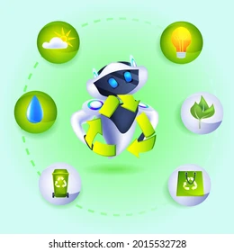
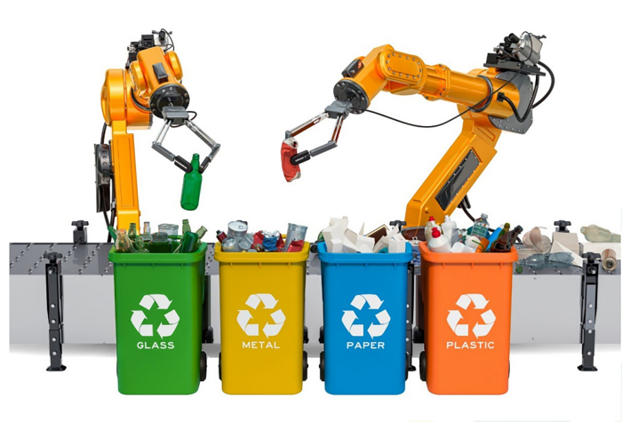
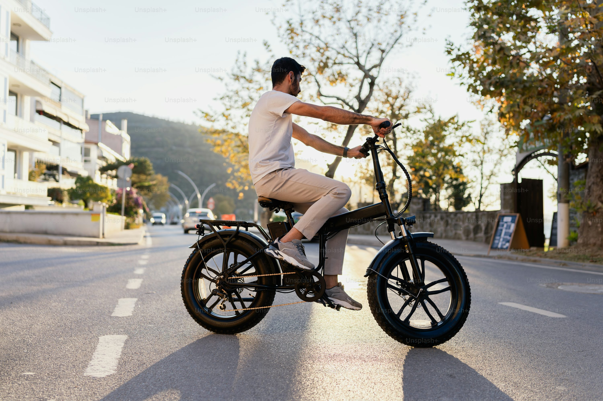
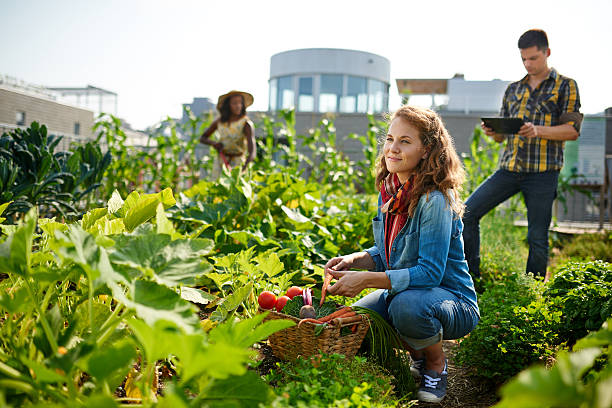

🎤 Expositor destacado

Haz clic en la imagen para más información.
♻️ Reciclaje inteligente

Haz clic en la imagen para más detalles.
🚴♂️ Movilidad ecológica

Haz clic en la imagen para más información.
🌱 Agricultura urbana

Haz clic en la imagen para más detalles.